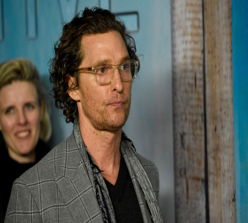

Matthew David McConaughey es un actor y productor de cine y televisión estadounidense.
Es ganador de un premio Óscar, un Globo de Oro y un SAG.
De los papeles televisivos que ha desempeñado, es especialmente reconocido por su interpretación de Joseph Cooper
en la película de Interstellar.
Su madre Mary Kathleen "Kay" McCabe es una exprofesora de kindergarten y su padre James Donald
"Jim" McConaughey, era jugador profesional de fútbol americano.